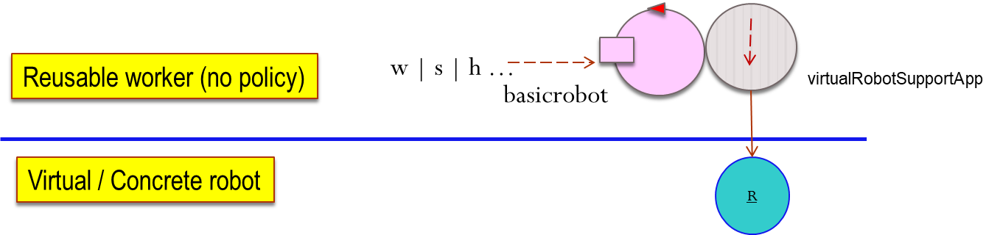
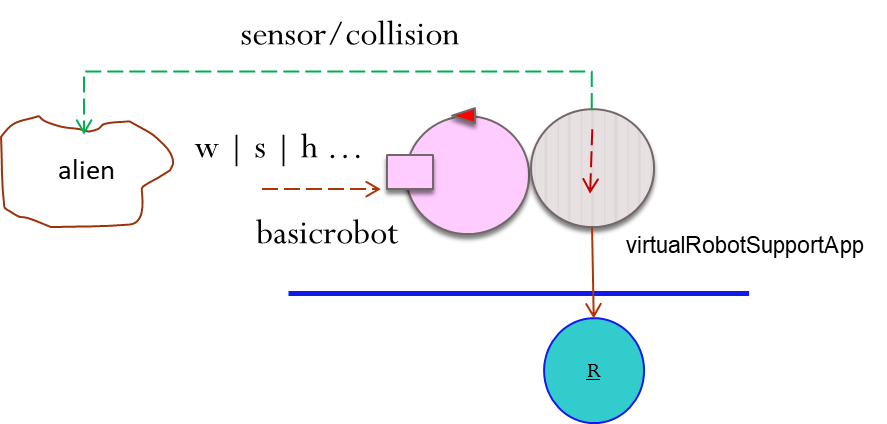
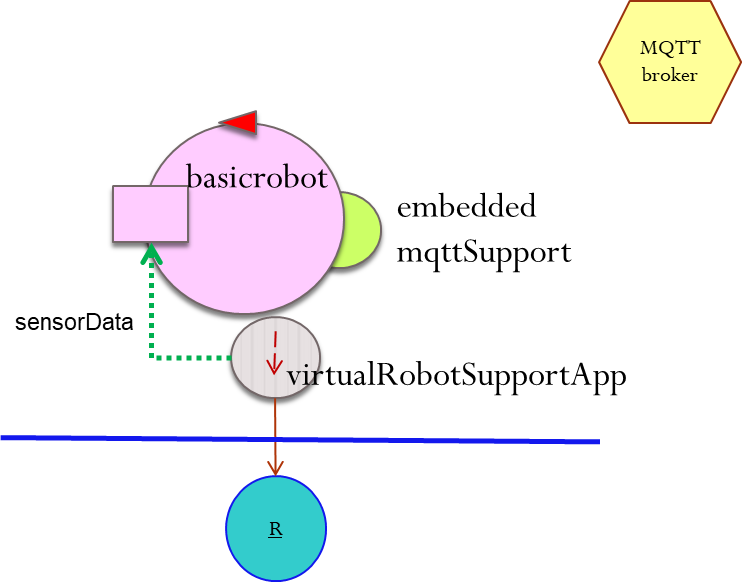
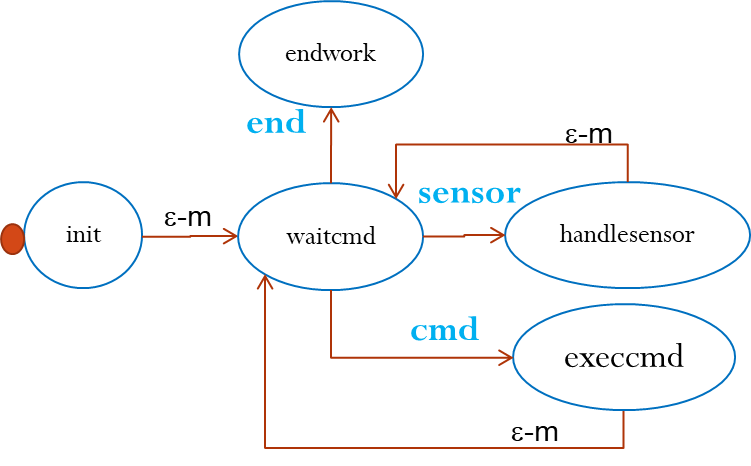
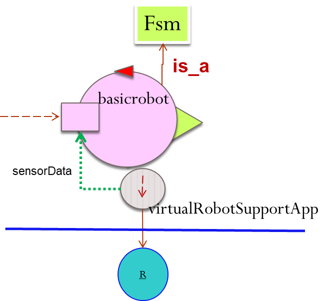
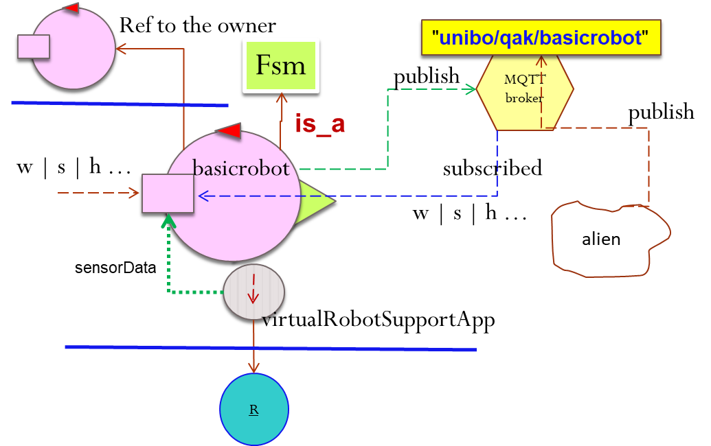
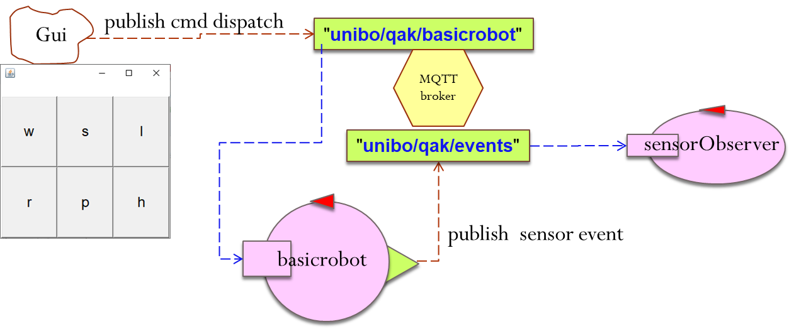

basicrobot | A reusable FSM actor (towards 'microservices')
Introduction
This report is related to the first work to do
work to do related to our
layered architecture.
Requirements
Design, build and test the
basicrobot introduced in our last
layered architecture
by specifying its behavior with the custom DSL language provided by
fsm/Fsm.kt
and described in
FSM.html.

Requirement analysis
With reference to our
first actor-based robot-application,
the requirement consists in exploiting a precise technology (the custom DSL language
fsm/Fsm.kt
described in
FSM.html) to
express the behavior of the actor as a (message-based) Finite State Machine.
Problem analysis
The code re-factoring is related to a component that will be part of a
layered architecture.
As a consequence, there is a first main change to be introduced in our first
RobotActorBoundary | logical architecture.
More specifically, since:
the problem is that the sensor-data must be propagated to
basicrobot user component, in order to
inform such an user
as soon as possible (i.e. without asking the robot via polling) about the state of the world in which the robot is running.
Moreover, from now-on, we must be prepared to abandon the
homogeneity hypothesis, i.e. that all the components of our systems
will be coded with the same programming language.
We must foresee the possibility that the user-component could be a
remote entity
written in some unknown code (called - from non on - an '
alien').
Thus, our reference logic-architecture might (the
homogeneity hypothesis is not excluded) become:

In this case, our
basicrobot has no reference to the calling 'alien' and we must find a way to send sensor information to it.
Events
From now on:
Test plans
To make a test possible we could:
- introduce an explicit representation of the current logical state of the robot:
enum class basicrobotstate {
stop, forward, backward, rleft, rright, obstacle
}
Note that the logical state is related with the state of the FSM but it is not the state of the FSM.
- check the logical state of the robot after the execution of each command.
- plan to hit an obstacle an check that the logical state of the robot is equal to
basicrobotstate.obstacle
|
This, a possible test is:
fun testObstacle(){
runBlocking{
delay(1000) //time for robot to start
Messages.forward( "test","cmd", "w", robot )
delay(1500)
//AFTER obstacle
assertTrue( basicrobot.rstate == basicrobotstate.obstacle)
Messages.forward( "test", "end", "end", robot )
println("testObstacleLocal END with robot in ${basicrobot.rstate}")
robot.waitTermination()
}
}
For a more complete testing code see
testBasicrobot.kt
|
Project
The full code is reported in
robotAppl/basicrobot.kt (project
it.unibo.actorfsm).
The basicrobot is a specialized version of the class fsm/Fsm.kt

Its behavior can be modeled as a Finite State Machine:

The state transitions are 'fired' by messages with the following msgId;
- sensor: sent by the (virtual)tobot
- end: sent ny the user
- cmd: sent ny the user with payload=h | w | s | r | l
The code is in basicrobot.kt.
|
The basicrobot class is defined as follows:
class basicrobot ( name: String, scope: CoroutineScope,
usemqtt:Boolean=false,
val owner: Fsm?=null,
discardMessages:Boolean=true
) : Fsm( name, scope, discardMessages,usemqtt){
The optional property owner is a reference to the actor that uses the basicrobot.
The state diagram on the left is mirrored in the structure of the code, thanks to the
DSL language
introduced in FSM.html
override fun getBody() : (Fsm.() -> Unit){
return {
state("init") {
action { ... }
transition( edgeName="t0",targetState="waitcmd", cond=doswitch() )
}
state("waitcmd"){
action { ... }
transition( edgeName="t0",targetState="handlesensor", cond=whenDispatch("sensor") )
transition( edgeName="t1",targetState="endwork", cond=whenDispatch("end") )
transition( edgeName="t2",targetState="execcmd", cond=whenDispatch("cmd") )
}
state("execcmd"){
action { ... }
transition( edgeName="t0",targetState="waitcmd", cond=doswitch() )
}
state("handlesensor")
action { ... }
transition( edgeName="t0",targetState="waitcmd", cond=doswitch() )
}
state("endwork") {
action { ... }
}
}//return
}
|
Using the actor from another actor
|

|
//The owner can write
lateinit var robot : Fsm
val msg = ApplMsg.buildDispatch( ... )
forward( msg, robot )
//A main program can write
Messages.forward( "user","cmd", "r", robot )
See the utility utils/Messages.kt
|
Using the actor via MQTT
|

|
//An 'alien' could write
val msg = ApplMsg.buildDispatch( ... )
mqtt.publish("unibo/qak/basicrobot", msg.toString(), 0, false);
//mqtt is the MQTT-support of type MqttUtils
For an example, see consolegui/ConsoleGui.java
//A main program can write
val mqttMain = MqttUtils("main")
Messages.emit( "main","alarm", "fire", mqttMain )
See the utility utils/Messages.kt
See also FSM.html.
|
An application
In our working
it.unibo.actorfsm project:
- Remove any resource using JUnit form the src directory.
- Assure that the file sensorObserver.kt
includes a main that activates the actor with usemqtt=true.
- Change the build.gradle according to the last version
and set
mainClassName = 'robotAppl.SensorObserverKt'
Remember that Kotlin generates standard Java code.
- Execute gradle build distZip and (remove the filter related to Gradle build folder)
look at the generated build/distribution/it.unibo.actorfsm-1.0.zip.
- Expand the zip file somewhere (e.g. into a issRun directory).
- cd to issRun/it.unibo.actorfsm-1.0\bin and run it.unibo.actorfsm.bat
to start the actor sensorObserver.kt.
- Activate the robotAppl/basicRobot.kt
with the operation demoUsingMqtt.
- Activate the consolegui/ConsoleGui.java
with new ConsoleGui("basicrobot" ) to publish commands for the actor named 'basicrobot'.

- Move the robot by clicking on the buttons w|s|l|r|h (p sends a step command and will be user later on)
so that the robot hits some obstacle,
and look at the output of the sensorObserver.kt.
By AN Unibo-DISI